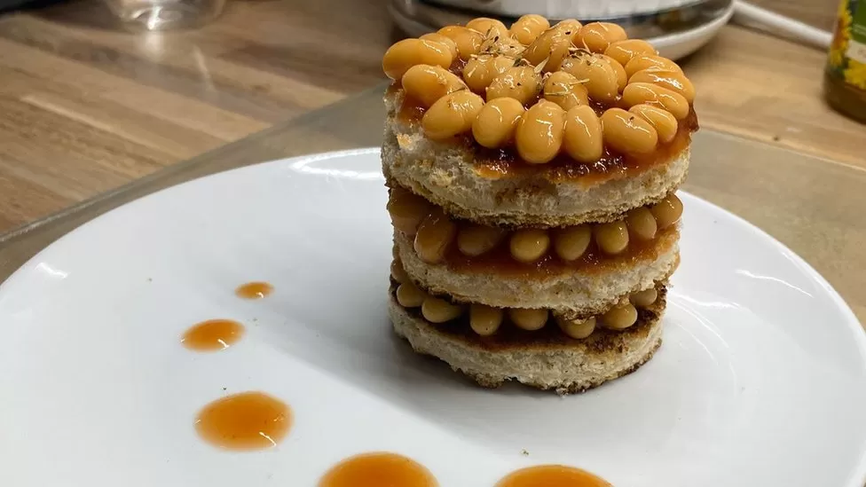

Bean Toast à la Microwave

Description
Fresh haricot beans slowly-cooked in a tomato sauce atop local artisan white bread.
Ingredients
Steps
- Remove your beans from the can and place in a microwave-safe bowl. Heat at 900w for 2 minutes.
- Place your bread in the toaster and set it for 3 minutes
- Butter your toast and top with the beans ready to serve.